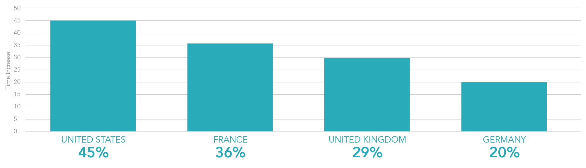

Online Gaming Surges During Global Pandemic. Manage KYC and Risk in ONE API.
Published on May 13th, 2020.
Globally we have seen dramatic shifts in our economic statue with multiple industries facing their most significant challenges to date since the COVID-19 outbreak. However, not all markets are affected by the epidemic, and some are even experiencing higher customer engagement and revenues. When we look at the worldwide impact in the gaming industry during COVID-19, it is indicative that igaming and gambling platforms are leading the way and surging to new heights.
In this article, we will look at the worldwide impact witnessed in the gaming industry and discuss strategies to efficiently manage the volume increases in a frictionless manner, global fraud defence and regulatory changes many countries are mandating because of these volume surges.
Customers are seeking entertainment.
As people continue to accumulate to life locked-down with their primary access to the outside world through digital connection, online traffic has rapidly increased. In recent months, online resource visits have increased by 50-70% (1). Outside of utilising the internet to manage day-to-day lives and needs, people are trying to distract themselves. They are subconsciously looking for things action-packed to bring adrenaline and entertainment and, in some cases, maybe even be trying to increase their recent loss of income; primarily through casinos offering bonuses.
In the U.S. alone, gaming usage has increased by 115% (2) compared to a typical day prior to the virus outbreak. Globally it is the number one data usage holding a 54% increase over other data usage types including web traffic at only a 20% increase and streaming at a 12% increase. (3)
Time spent in igaming per region during coronavirus pandemic:

In a recent survey performed by Statisca 19% (3) of users state, they expect to spend more on igaming due to the coronavirus. Digital games have increased by 52.9% as of March 2020 and spending on digital games during the global pandemic is 666% higher than any other gaming segment at a current $10 Billion U.S. spend.
When we expand further into the worldwide gambling industry, traffic has increased by 10-15% (1). In the last 30 days, the search term surrounding online poker has seen a rapid surge of almost a 400% increase (4). Whereas in the U.K., 20% of people search for online casinos than online poker. More and more people are appearing in poker rooms and online casinos, leading to the highest engagement increase ever experienced in the industry over the last three years. In New Jersey, U.S., (the leader in internet gambling) has experienced a 66% rise in their internet gambling revenues (excluding esports) equalling $65 million U.S. They are currently forecasting to exceed $700 million this year, which is 144% increase from 2019.(5)
Some countries are trying to leverage this engagement and holding prohibitions on internet gambling. In a recent Nasdaq article Morgan Stanley gaming analyst Thomas Allen stated: “We believe the impact of COVID-19 could spur more states to legalise online casino and sports betting.”(6) While other countries are implementing new compliance regulations to manage the increase in volumes, such as within Sweden, the government is introducing limits to be in place for the remainder of the pandemic. Gamblers will be only able to deposit a maximum of 5,000 Swedish krona ($496) per week, with loss limits also going into effect. (7)
Although even within gaming, the effects of the pandemic are complicated; some segments such as eSports are left to face new challenges with events and sports cancelled or postponed. Modern Times Group’s (MTG) eSports forecasted year-on-year revenue change of the highest decline expected at -45% (3). However, many esports are adapting their business strategies and turning to engage users online.
Managing KYC and risk, gain a competitive edge and future-proof your online gaming platform.
Dealing with the surge in volumes both in onboarding and transactional processing along with combatting the rise in cybercrime as a result, in an efficient manner while teams work remotely, is bringing a whole new level of challenges. Gaming operators and affiliates are putting significant importance on their brand awareness, obtaining frictionless onboarding, customer trust, loyal and retention.
For many years, online entities have been integrating their required KYC and anti-fraud processes through API’s. However, each of those are well known to be a single data service solution, resulting in multiple 3rd party integrations that are timely and place a great deal of strain and cost on development and resources. As a result, many just implement what they require and therefore never utilise the benefits additional KYC data can bring to their business.
In the current landscape, it not feasible to start integrating additional KYC and various anti-fraud technology. Managing KYC for regulatory requirements and fraud prevention needs to be quick, streamlined, automated and in the most frictionless manner possible.
Data is vital for anything performed digitally, and the gaming industry is no different.
One of the top risk mitigation strategies many markets online are leveraging is partnering with a data aggregator with a complete orchestration hub. A data aggregator provides access to an abundance of KYC data services from only a single API integration; that is integrated in a very timely, efficient and cost-saving manner.
From a data aggregated hub, it is effortless to activate or deactivate KYC in real-time, for singular or multiple segments of any business, in whichever region or timeframe required. Additionally, tier-one data aggregators host the most current leading-edge data services from their hub. So through a single API, businesses are future-proofing their KYC with minimal to zero-touch on their business operations.
Some data aggregators are a complete orchestration hub and provide dynamic decision-making frameworks and real-time anti-fraud engines with intelligent transactional monitoring. Establishing a centralised view of all verifications, transactions and associated risk to improve reaction times to fraud dramatically. 4Stop, founded in 2016, saw the data aggregation trend rise, and now their orchestration hub is home to thousands of tier-one data sources in conjunction with their leading anti-fraud technology and data science. Additionally, their data hub services a complete end-to-end business underwriting solution to mitigating risk globally regardless of the B2B or B2C touchpoint.
Partnering with an orchestration hub is one of the most beneficial investments any online business could make. Where flexibility to easily manage regional presence and expand into new markets to harness engagement rates is quickly and easily obtained. To harness the benefits utilising additional KYC brings customers overall lifetime value with no impact on I.T. resources or integration costs. Most importantly, as we have experienced in this pandemic, to be fully future-proofed on global risk mitigation in a modern and fail-safe manner regardless of economic and regulatory shifts within our online eco-system.
For more information on 4Stop contact a representative today.

Watch Webinar
How to Future-Proof Your KYC and Risk in One API.
Discover how through leading technologies you'll obtain a fail-safe, future-proof global risk mitigation defence with utmost agility, gain a competitive edge and accelerate performance, regardless of regulatory or economic evolutions globally we experience.
WATCH NOW
 Follow us
Follow us